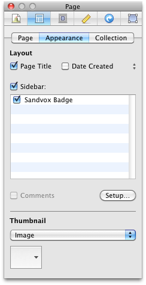

Page Inspector: Appearance Segment

Layout
Page Title
Uncheck this box if you do not want the pages title to show on the page.
Comments
Check this box if you want to allow user comments on the page. You also need to configure the comments.
Date Created, Modified
Check the box to display the page's date and time of creation, or modification.
Show sidebar
Hide or show the sidebar on this page by checking or unchecking the sidebar box. You can also choose to include or remove specific objects by checking or unchecking them in the sidebar box.
Thumbnail
To select a custom image, select 'custom image' from the pop up menu and navigate to the image in the finder window.